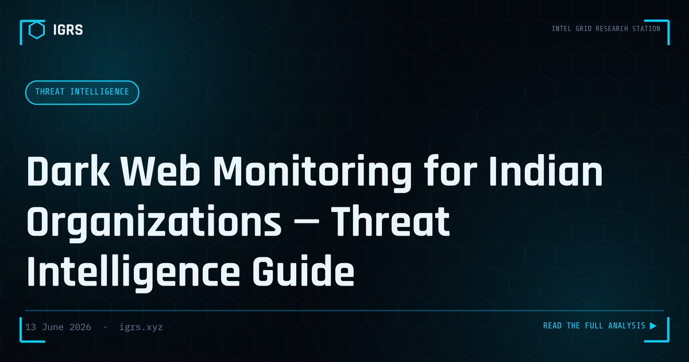

Dark Web Monitoring for Indian Organizations — Threat Intelligence Guide
Dark Web Monitoring for Indian Organisations
The dark web is where stolen data is traded, breaches are sold, and threats against organisations are planned. Dark web monitoring is the practice of continuously watching these hidden marketplaces, forums, and paste sites for mentions of an organisation's data, credentials, or brand. For Indian businesses and law enforcement, structured dark web monitoring provides early warning of breaches and fraud. This guide explains how it works and how to do it lawfully.
What Dark Web Monitoring Detects
| Indicator | Why It Matters |
|---|---|
| Leaked employee credentials | Enables account takeover and intrusion |
| Customer data for sale | Indicates a breach, triggers DPDP duties |
| Brand or domain mentions | Planned phishing or targeting |
| Stolen payment cards | Fraud against customers |
| Ransomware leak listings | Confirms or warns of compromise |
Sources Monitored
Effective monitoring spans multiple layers: dark web marketplaces selling data and access, hacking forums where breaches are announced, Telegram and messaging channels increasingly used for trading, paste sites where credentials are dumped, and ransomware leak sites that publish victim data. India-targeted activity often appears across several of these simultaneously, so breadth of coverage matters.
How Monitoring Works
Dark web monitoring combines automated collection and human analysis. Crawlers and feeds gather data from accessible sources, keyword and selector matching flags mentions of the organisation's domains, executives, and data, and analysts validate findings to filter noise and assess credibility. Continuous monitoring means new exposures are caught quickly rather than discovered months later when damage is already done.
Credential Exposure Monitoring
The most actionable use is monitoring for leaked credentials. When employee or customer email-password combinations appear in breach dumps, attackers use them for credential stuffing and account takeover. Detecting these early allows forced password resets before exploitation. Services like Have I Been Pwned provide a free starting point, while commercial platforms offer deeper, continuous coverage with India-specific sourcing.
Legal and Ethical Boundaries
Dark web monitoring in India must stay lawful. Observing and collecting intelligence from accessible sources is legitimate, but purchasing stolen data, accessing systems without authorisation, or engaging in transactions can breach the IT Act. Professional monitoring focuses on detection and intelligence, not participation. Findings that indicate a breach also trigger obligations under the DPDP Act 2026 to assess and potentially report the exposure.
Responding to Findings
Detection is only valuable if acted upon. A response process should validate the finding, contain the exposure (reset credentials, revoke access), assess the scope and whether a breach occurred, notify affected parties and regulators as required, and feed indicators into defensive controls. For confirmed breaches, preserving evidence and reporting to CERT-In and cybercrime.gov.in are part of a complete response.
Building a Monitoring Capability
Indian organisations can build dark web monitoring through commercial threat intelligence services, free tools for credential checking, and CERT-In advisories for sector-wide warnings. The right approach depends on size and risk: large enterprises and critical infrastructure warrant continuous commercial monitoring, while smaller organisations can start with credential monitoring and breach alerts. Whatever the scale, the goal is the same — to learn that your data is exposed before attackers fully exploit it, turning the dark web from a blind spot into an early-warning source.